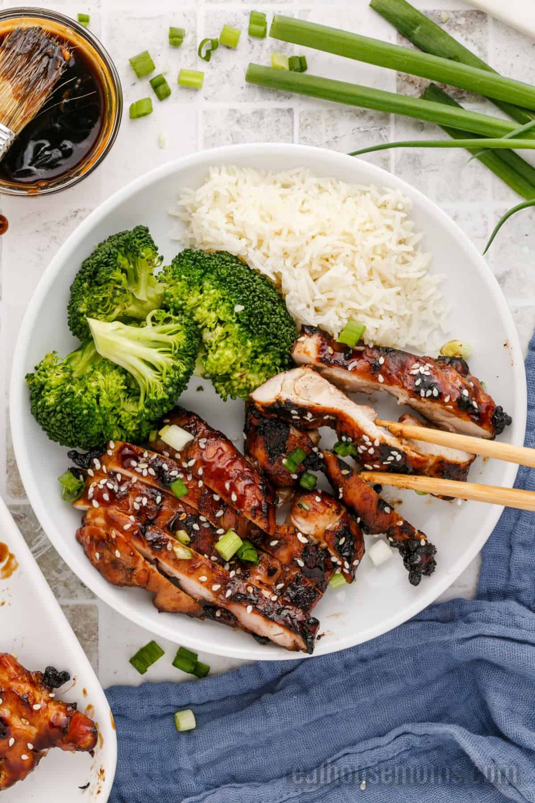

Grilled Chicken Teriyaki Skewers with Miso Ranch

Description
Chicken grilled with a highly flavoured glaze of soy sauce and sake or mirin (sweet wine). Garlic and fresh ginger are sometimes added to the mixture. In westernized Japanese cooking, the teriyaki sauce is frequently used as a marinade as well as a basting sauce.
Ingredients
- 12 Bamboo skewers
Chicken Skewers
- 2 pounds skinless, boneless chicken thighs
- ½ cup soy sauce
- ½ cup sake
- ⅓ cup mirin (Japanese sweet wine)
- ¼ cup brown sugar
- 2 tablespoons minced green onions
- 2 teaspoons finely grated ginger
- 1 tablespoon vegetable oil
Miso Ranch Dressing
- ¾ cup mayonnaise
- ⅓ cup buttermilk
- ¼ cup sour cream
- 1 tablespoon white miso paste
- 1 tablespoon minced green onion
- 1 clove garlic, crushed
- 1 tablespoon finely chopped fresh tarragon
- 1 tablespoon finely chopped fresh dill
- 1 tablespoon finely chopped fresh chives
- Freshly ground black pepper to taste
- 1 pinch cayenne pepper
Steps
- Soak bamboo skewers in water.
- Prepare the chicken skewers: Cut chicken thighs in half lengthwise along the creases and halve the thicker portions to get 3 or 4 pieces each. Place chicken in a bowl. Pour in soy sauce, sake, mirin, brown sugar, green onions, ginger, and oil. Toss by hand until well combined and brown sugar is dissolved. Cover top in plastic wrap and marinate in the refrigerator for 2 to 6 hours.
- Make the dressing: Combine mayonnaise, buttermilk, sour cream, and miso in a bowl. Add green onion, garlic, tarragon, dill, and chives. Season with black pepper and cayenne. Whisk dressing until thoroughly combined.
- Thread chicken pieces onto skewers. Strain marinade into a saucepan and bring to a boil to make the glaze.
- Preheat a grill for medium-high heat. Grill skewers, basting with some of the reserved marinade, until meat firms up and springs back to the touch, 4 to 5 minutes per side.
- Serve skewers next to the miso ranch dressing and brush with reserved glaze.
Note
-
Substitute crème fraiche or yogurt for the sour cream if desired. Try to avoid an extra-long marination, especially for such small chunks. The meat will cure in the sweet, salty mixture, which can give it an odd texture once cooked and make it easier to fall apart.